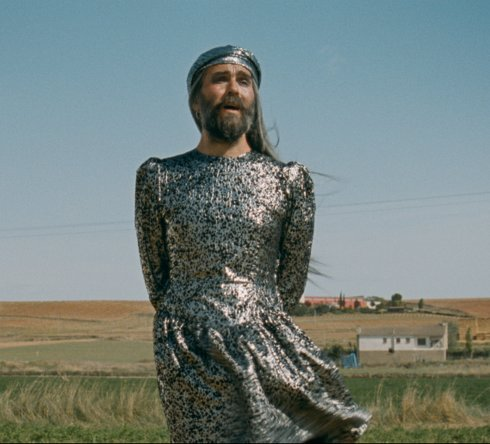

Derechos del hombre
Rights of Man

Juan Rodrígañez
Montag 14 okt | 18.30 | werkstattkino
In der trockenen Landschaft von Kastilien hat die chaotische Zirkustruppe „Die Unbezähmbaren“ ihr Zelt aufgeschlagen. Sie proben ihre neue Show „Derechos del hombre“ ein. Beide Titelgebungen haben sie Herman Melvilles letztem, posthum erschienenen Roman „Billy Budd“ entliehen. Unter ihrer komödiantenhaften Improvisation verwandelt sich das dunkle Setting des Romans in eine Fingerübung, die sich leicht ablenken lässt. So geraten sie immer wieder in Zwist und streiten über das Spaniertum, zu dem die Schönheit der Landschaft und die volkstümliche Architektur gehören, oder sie kritisieren die Auftritte der anderen. Das Figurenarsenal ist bekannt: die Dame mit dem Bart, die Schlangenfrau, die Seiltänzer, der Zirkusdirektor und der Wahrsager. Mit ihren Nummern aber kommen sie nicht wirklich voran. Am Ende ist dies gar ein Anti-Zirkusfilm?
Juan Rodrigáñez geb. 1971 in Madrid, Spanien. Nach einem Filmstudium Studium der Geschichte. 2008 gründete er die Produktionsfirma Tajo Abajo. Gemeinsam mit einer Gruppe von Choreografen und Künstlern rief er 2013 das Institute of Illiterate Art ins Leben. |
| Filme Der Geldkomplex 2015 (10. UX) Derechos del hombre 2018 |